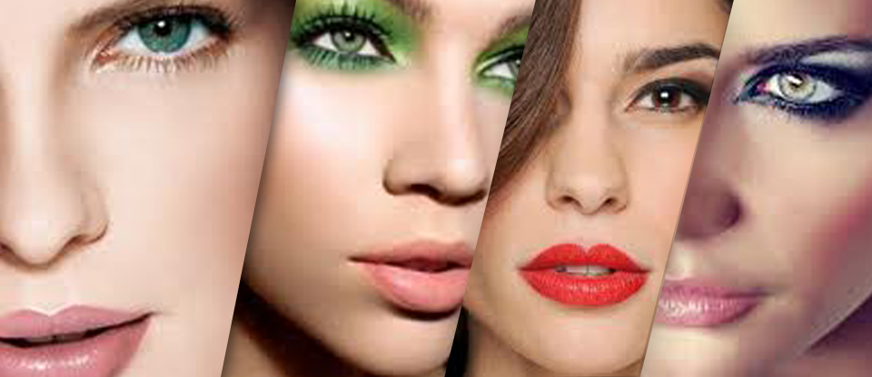

Lista de material para maquillaje profesional
- Esponjas aplicadoras.
- Polvos faciales compactos y traslúcidos con diferentes tonos.
- Rubores (blush) en diferentes tonos cálidos y fríos.
- Set de brochas para maquillaje.
- Sombras para ojos en variedad de colores cálidos y fríos.
- Aplicadores de sombras.
- Delineador de ojos.
- Rimel negro y rizador de pestañas.
- Pinza saca cejas.
- Saca puntas.
- Pestaña postiza y pegamento para pestaña.
- Cotonetes y pañuelos desechables.
- Toalla.
- Banda de maquillaje.
- Banda de maquillaje.
- Babero.

Cuando ya cuentes con los materiales de la anterior lista, te sera de mucha ayuda la siguiente acerca de la clasificación del maquillaje.
Clasificación del maquillaje
- Diario : Este tipo de maquillaje es cotidiano, sencillo y sin tanto contraste de ecolor, lo utilizamos para vernos presentables.
- De día : Con este tipo se pretende realzar la fisonomía de la persona, respetando sus rasgos, utilizando tonos que tengan una armonía y no un contraste con su atuendo, cuidando las correciones que deben de ser leves ya que la persona estará expuesta a la luz solar.
- De noche : Con este tipo de maquillaje podemos resaltar facciones o corregirlas debido a que la persona no estará expuesta a luz natural, se puede jugar con contrastes de color, brillos y enmarcar ojos o la boca según sea el caso.
- Correctivo: Como su nombre lo indica tiene el objetivo de corregir imperfecciones en el rostro piel como nariz, pómulos, ceja, mentón, frente o rostro completo.
- Novia: Es muy parecido al maquillaje de fotografía, ya que la novia es el centro de atención del evento, debe de resaltar las facciones y aminorar imperfecciones buscando siempre la naturalidad del rostro, enfocándonos en el área de ojos para resaltar su mirada con una combinación de sombras, este tipo de maquillaje no debe de ser cargado.
- Quinceañera: Este maquillaje es natural para no perder la frescura de la quinceañera, utilizando tonos que vayan de acuerdo al tono de la piel, se puede hacer pequeñas correcciones siempre y cuando no modifique demasiado las facciones de la joven.
- Fotografía: Debe de ser cargado en tonalidad ya que la luz o el flash cambia la tonalidad e intensidad de los colores, se debe hacer una pre-correción antes de la base de maquillaje, siempre y cuando sea necesario, se debe de emparejar el rostro y el cuello para logar una uniformidad.
- Fantasía: Como su nombre lo indica debemos fantasear, jugar con los colores para crear expresiones, dibujos, originalidad y personajes, para un evento o una ocasión especial.